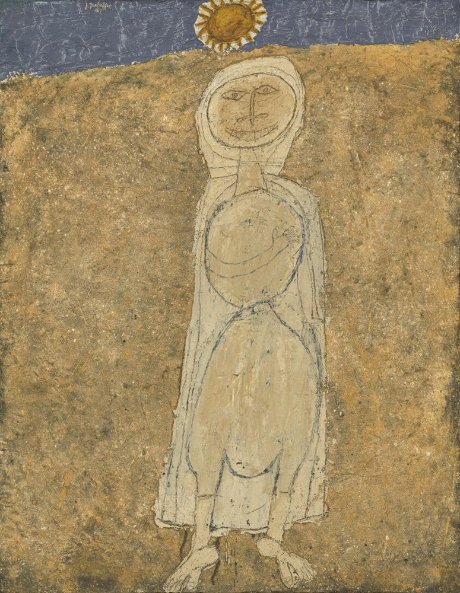

The Grand Arab (He Only Has Sand)
Jean Dubuffet · 1947 · Oil and sand on canvas · 145.4 × 113 cm · Art Institute of Chicago
In copyright. Look and learn: shown for study, not for download.
Jean Dubuffet painted this in 1947, the year of the first of three long trips to the Sahara. Since 1945 he had been mixing thick oil paint with sand, mud, coal dust, gravel and tar, and scratching marks into the paste instead of brushing; this canvas is oil and sand. It was shown that October in his portrait exhibition at the Galerie René Drouin in Paris. Mr. and Mrs. Joseph Randall Shapiro of Oak Park, Illinois, owned it by 1953 and left it to the Art Institute in 1996.